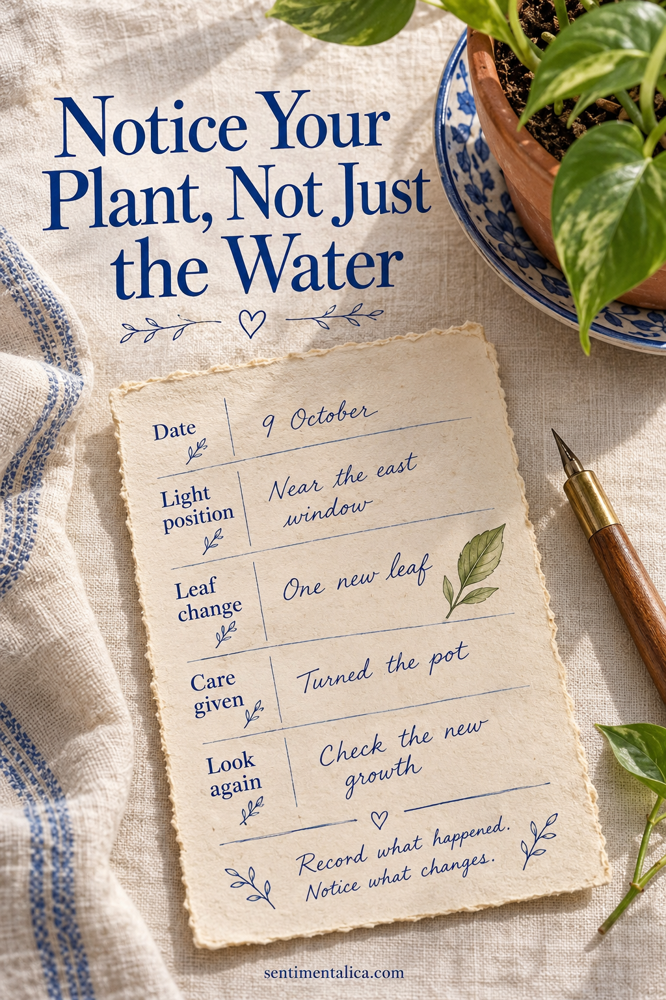
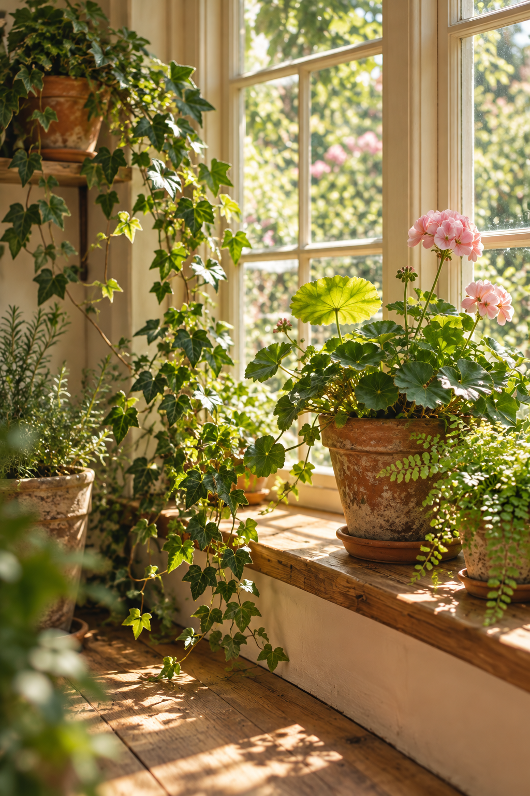

A plant-care journal can remember more than the last time you watered. It can hold the shape of a new leaf, the position of a pot, and the small changes you noticed between photographs. Make one repeatable observation card with a date, light position, visible change, care already given, and next observation. The journal records what happened; it does not need to prescribe the same routine for every plant.

Give Each Plant a Clear Identity
Start a page with the plant's name if you know it and a description of its pot. Add where it lives and the date you began the record. If two plants look similar, a small drawing of the container can help you tell their notes apart without an elaborate coding system.
Leave a place for a photograph or sketch. Take the picture from roughly the same angle when you want to compare appearance over time. The image is a reference for your own observations, not a requirement for a perfect plant portrait. Ordinary room light and an uncluttered background make details easier to compare.
Write what you can see before deciding what it means.
Build a Card You Can Repeat
Draw five short fields on a piece of plain paper: date, position, visible change, care already given, and next observation. Give visible change the most room. Keep the other headings compact so the card does not feel like a form that takes longer to fill than to notice the plant.
Under position, describe what you can actually see: ‘on the shelf beside the east window’ or ‘moved farther from the glass.’ Record a change of location when it happens. This supplies context for future notes without pretending that the journal measures light precisely or tells you what every plant needs.

Write Observations Before Interpretations
For visible change, describe the leaf, stem, or surface in ordinary words. ‘The newest leaf has opened’ is clearer than ‘doing well.’ ‘One lower leaf is yellow at the edge’ preserves a detail without deciding its cause. A quick outline with an arrow can help you locate the feature later.
If you have a question, keep it separate from the observation. You might write ‘I wonder whether the new position matters’ beneath a factual note about moving the pot. Separating what you saw from what you think makes the record more useful if you later seek plant-specific guidance.
Record the Care You Already Gave
Use the care field for actions that actually happened, with the date where relevant. Note watering, a change of pot, wiping leaves, or another action in your own terms. Avoid filling future dates with automatic instructions simply because there is an empty box. Different plants and conditions can need different attention.
For next observation, write what you want to look at again: the same leaf, a newly opening shoot, or how the plant looks in its new position. This is a reminder to notice a feature, not a diagnosis or a care schedule. The distinction keeps the journal grounded in your experience.
Make the Record Easy to Keep
Attach cards in date order, or give each plant a small envelope for loose entries. Leave decorative images around the margins so the observation fields remain plain and readable. Repeating the same card shape is enough to make the book feel coherent; every entry does not need a newly designed spread.
When you return to an earlier page, compare descriptions before making broad conclusions. Several notes may show a change you would otherwise have forgotten. A plant journal is also allowed to hold delight: the day a leaf unfurled, the pot you found secondhand, or a corner that started to feel like a small indoor garden. Those details belong beside the practical record.
Find more gentle paper projects in the Sentimentalica journal.